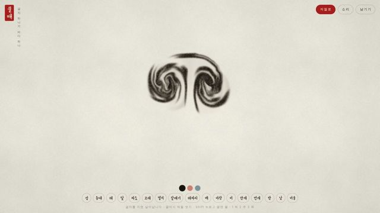
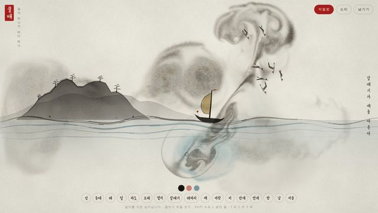
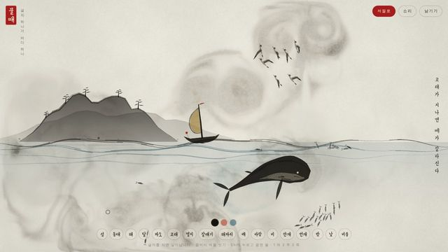
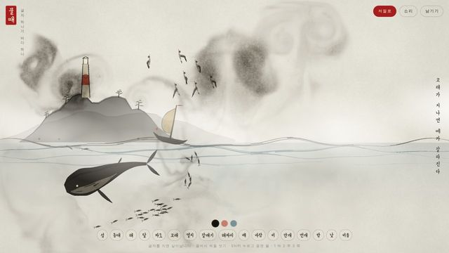
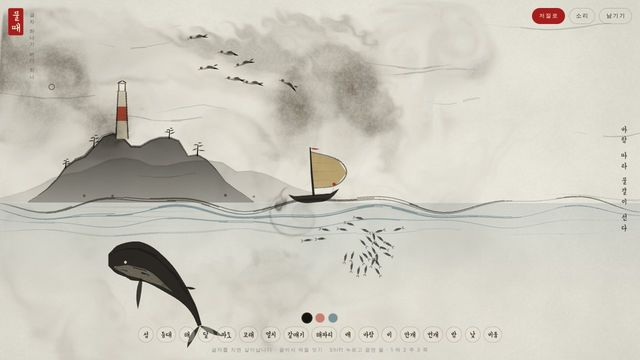
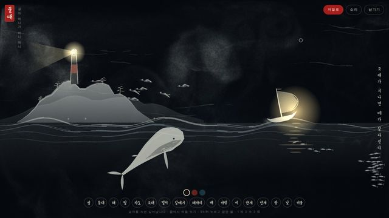
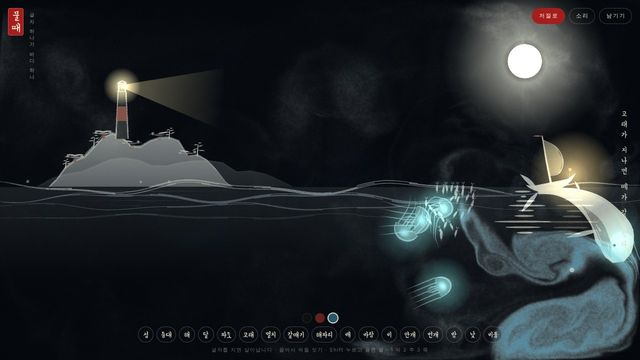
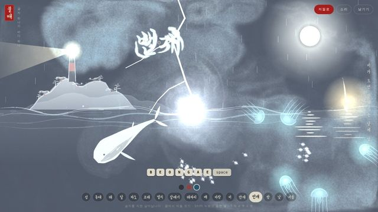
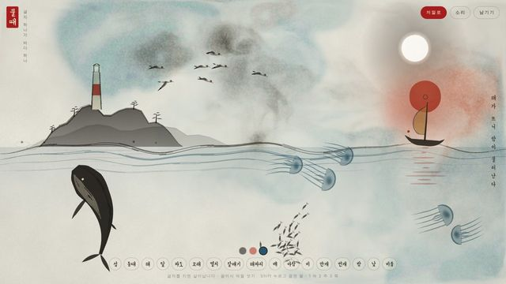

작업 흐름
- 입력
- 주제 하나(어떤 세계인지), 쓰는 말과 글자
- 브리프
- 종이의 구도(물금 · 하늘 · 위에서 본 시점), 12–18개 글자의 표(치는 법 · 역할 · 무엇이 되는지 · 어떻게 움직이는지 · 먹에 하는 일), 생물의 몸 한계, 누가 누구를 만나면 무슨 일이 생기는지와 그때 뜨는 한 줄, 색 · 소리 · 공연 순서를 적은
BRIEF.md - 세계
world.js한 파일: 붓 자국(획 · 번짐 · 능선 · 잎 · 점)만으로 그린 그림 함수, 글자 → 살아 있는 것, 규칙, 혼자 연주하는 공연- 확인
- 캐스트 시트(생물마다 여덟 방향), 자동 검사(글자마다 무언가 일어나는지, 규칙이 발동하는지, 머리 방향 · 굽힘 · 등이 위 · 사는 곳, 먹으로 뒤덮이지 않는지, 두 번 돌려 같은지, 소리, 390px 화면), 스틸 채점
- 출력
- 어디서나 열리는 정적 페이지(라이브러리 · 이미지 · 소리 파일 없음), 공연을 찍은 1080p MP4와 WAV
cd ink-word-world
python3 -m http.server 8000 # /examples/tide/?auto
node scripts/check.mjs examples/tide --quick
node scripts/stills.mjs examples/tide --cast --sheet 12
node scripts/render.mjs examples/tide --out out/tide.mp4
node scripts/new-world.mjs ~/my-world요구 사항: 보는 데는 WebGL2 브라우저, 스크립트에는 Node 18+ · Playwright Chromium · ffmpeg. GPU · npm 설치 · API 키가 필요 없습니다(CPU WebGL에서 한 스텝 약 45ms, 96초 공연 검사 약 5분). 단계별 순서는 SKILL.md에 있습니다.
샘플
원본에 없는 주제(한글로 쓰는 바다)를 브리프부터 새로 설계한 예제 「물때」의 장면, 가장 작은 세계인 스타터 「연못」, 검토용 이미지입니다. 카드를 누르면 라이브 페이지가 그 순간까지 빠르게 연주한 뒤 이어서 재생됩니다.
「물때」 바다 · 한글 17글자 · 규칙 19개 · 96초
물금 하나를 사이에 둔 옆모습의 바다입니다. 달을 쓰면 물이 들고, 바람을 쓰면 돛이 부풀고 안개가 밀리고, 밤을 쓰면 종이가 뒤집혀 등불과 해파리가 빛납니다

시작 · 2초글자가 먹으로 풀림제목이 쓰였다가 서로 반대로 도는 두 소용돌이가 됨

섬 · 파도 · 배 · 갈매기갈매기가 배를 따른다글자 넷이 만나 첫 규칙이 발동, 오른쪽에 한 줄이 뜸

고래 · 멸치고래가 지나면 떼가 갈라진다척추 7마디의 몸, 꼬리가 먹을 밀어 물살을 남김

안개 · 등대안개 속에 등대만 보인다등대는 가까운 섬 위에 서고 빛줄기가 돎

바람바람을 받아 돛이 부푼다젖은 먹이 바람 쪽으로 끌리고 안개가 밀려 나감

밤등대가 밤바다를 쓴다종이가 글자 자리에서부터 뒤집히고 먹은 흰빛이 됨

달 · 해파리달빛 따라 해파리가 뜬다달이 뜨면 물금이 올라 섬 발치가 잠김(밀물)

비 · 번개번개에 온 바다가 놀란다떼가 흩어지고 고래가 잠수, 9초 동안 물결이 일어섬

해해가 뜨니 밤이 물러난다밤에 해를 쓰면 날이 밝음. 공연 내내 번진 쪽빛이 남아 있음
「연못」 스타터 위에서 본 연못 · 7글자 · 규칙 5개 · 51초
역할이 하나씩만 있는 가장 작은 세계입니다. 새 주제는 여기서 시작해 글자 · 그림 · 규칙을 모두 바꿉니다
검토 캐스트 시트 · 스틸 시트
장면을 쓰기 전에 생물을 여덟 방향으로 세워 머리 방향과 등 · 배, 굽힘을 보고, 공연 전체를 한 장에 모아 검토 기준으로 채점합니다
실제 작품
이 스킬을 만든 출처와, 이 레포에서 새 주제로 만든 예제입니다.
링크
- SKILL.md 워크플로
- 폴더 lib · scripts · starter · examples
- README.md 빠른 시작
- references/BRIEF.md 원본이 보여 주는 것 · 브리프 틀 · 검토 기준
- references/WORLD.md 세계 · 붓 · 동작 · 소리 API
- references/LOOK.md 먹과 종이로 보이게 하는 값
- references/LESSONS.md 겪은 문제와 해결
- examples/tide/BRIEF.md 「물때」의 브리프